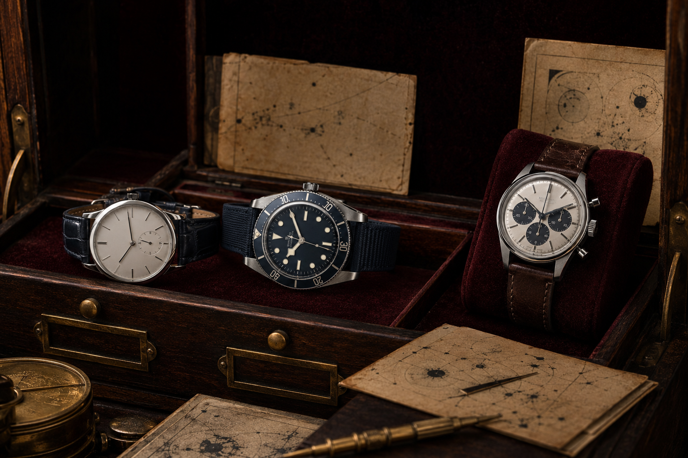

ABOUT THE ARCHIVE
Clarity for people who care about time.

Independent by design
Precision Watch Archive translates horology into useful, approachable knowledge. We examine proportion, movement architecture, dial design, care and collecting habits without presenting opinion as certainty.
Our goal is not to create urgency. It is to help readers notice details, ask better questions and make considered decisions that suit their routines and budgets.
Our editorial values
Accuracy, transparency and context guide every article. Illustrative watch names and references are clearly fictional; technical guidance remains general and readers should consult qualified watchmakers for individual servicing needs.